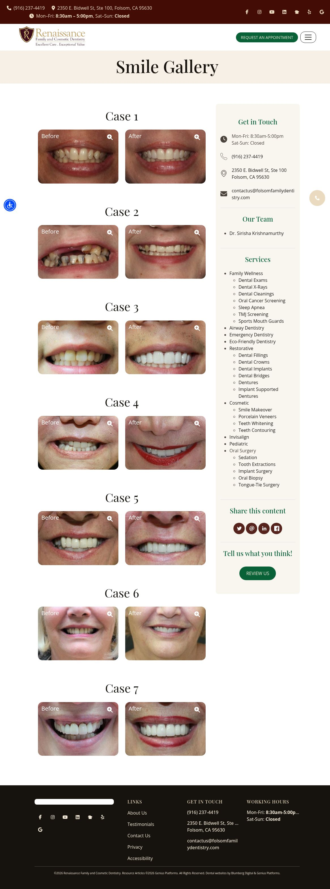

An educator’s approach
Dr. Krishnamurthy’s own bio emphasizes unhurried communication and informed treatment decisions.
Prepared for Renaissance Dentistry / Folsom, California
Your practice already connects patient education, cosmetic care and sleep-focused dentistry. Your gallery contains real work. The next step is to explain the thinking behind it and make the route to a consultation easier to understand.
The opportunity + our fixes ↘
The doctor’s perspective belongs beside the results.
01 / The good. What we would build on.
Dr. Krishnamurthy’s own bio emphasizes unhurried communication and informed treatment decisions.
A dedicated smile gallery already gives us a foundation for clearer, treatment-specific case stories.
Airway, sleep/TMJ and eco-friendly care give the practice a broader identity than a generic family-dentist website.
A Sacramento team for the site, the content and the campaign.
 AIMS Sports Recovery ↗
AIMS Sports Recovery ↗ Megan Meyerdick · Precision Home Loans
Megan Meyerdick · Precision Home LoansThe strongest opportunity is already on the site: explain what the practice did, why that plan made sense, and what a patient should ask about next.
The Smile Gallery labels cases by number and before/after status. The displayed entries do not explain the treatment, patient goal or elapsed time. Visitors can see a difference without understanding the care behind it.
Smile Gallery / seven displayed numbered cases ↗Turn selected, consented cases into concise stories: the goal, clinical plan, treatment, timing and limitations. Add practitioner-approved context and relevant next steps.
The appointment form says a submission does not secure an appointment and the team will contact the patient. It asks for a preferred time of day, but the visible explanation gives no expected response window.
Appointment form / callback process ↗Keep the honest request language. Add a realistic response expectation, an urgent-care alternative and a confirmation that explains the next step. Coordinate it with the team’s workflow.
The homepage rotates through cosmetic, Invisalign, restorative, airway and eco-friendly messages. The slide subheading repeats a general Folsom-practice description rather than making each pathway distinct.
Homepage / rotating treatment slides ↗Choose one primary first-screen story. Move the other services into a stable, easy-to-scan set of pathways, with real practice imagery and an obvious consultation action.
The doctor’s training and education-first approach are substantial. Use a short introduction video and a clearer hierarchy to make those strengths easier to understand.
Give gallery stories a named treatment and a corresponding service page. Help visitors move from the example they like to the information they need.
The homepage’s Case 7 preview uses image alternatives referring to Case 8. Check visible labels and image descriptions against the approved case record.

Every primary finding above points to the page reviewed. These observations describe the sampled public pages and browser session. They do not establish lost inquiries, campaign performance or every visitor’s experience.
View the practice website ↗The live Google profile showed 4.9 stars from 527 reviews on October 20, 2026. The practice address and website were visible in the same profile.
Live Google profile ↗Vessel would: Keep the profile, website and booking route aligned, and bring accurately attributed review proof into the patient journey. Counts are a dated snapshot, not a permanent total.
The requested mobile PageSpeed run did not return a completed lab result during this review. No speed score is inferred from a failed or incomplete test.
Practice website ↗Vessel would: Establish the mobile baseline, then validate navigation, image loading and the first useful action on real devices before scaling traffic.
The public @renaissancedentistryfolsom Instagram profile includes video content. Public profile inspection did not establish a reliable latest-post date; sign-in restricted the post-detail checks. This is not evidence of inactivity.
Official Instagram profile ↗Vessel would: Build on the existing voice. Review a dated content sample with account access, then connect the strongest practitioner explanations to the relevant service pages.
Meta Ad Library showed no matching active ads for the selected official advertiser with United States and All ads filters on October 20. This does not rule out other advertiser accounts, countries or channels.
Selected Meta advertiser ↗Vessel would: Confirm account ownership and existing campaigns first. Any proposed paid test should use approved creative, a focused page and a verified inquiry handoff.
Google Analytics, Tag Manager, Google Ads and Microsoft Clarity scripts are present. Visible scripts do not prove that conversions, consent or reporting work correctly.
Website script review ↗Vessel would: Preserve useful existing tools. Validate approved conversion events, booking handoffs and privacy-aware reporting with the account owner.
Local AI discovery queries were attempted, but a complete answer capture could not be verified for this practice. No ranking failure or universal AI absence is asserted.
Practice content baseline ↗Vessel would: Use Search Console and a repeatable local query set to establish a baseline. Improve the practitioner, service and case context that both people and search systems can understand.
Public checks dated October 20, 2026. No patient information was submitted, no appointments were made and no calls were placed. The first phase confirms access, approvals and measurement before a paid launch; filming and clinical claims remain subject to the practice’s review and appropriate permissions.
One clear story, the pages to support it, and real creative to bring it to people nearby. The work is shaped around this practice’s priorities.
Rework selected gallery entries with treatment names, clinical context, timing and an appropriate consultation route.
Film Dr. Krishnamurthy answering the questions patients ask about cosmetic decisions, sleep-related care and the first visit.
Build a coherent page and creative set around one agreed service, then test local campaigns after the booking handoff is measured.
Keep case context, contact details, profile information and follow-up expectations current. Report meaningful inquiry outcomes.
Vessel: strategy, page design and implementation, shoot planning, filming, editing, approved campaign work and reporting.
Your team: clinical accuracy, patient permissions, capacity, access approval and the patient response process.
This is a proposed partnership, not a production commitment. We would agree the page list, filming schedule, deliverable count and campaign responsibilities together before work begins. No patient or business outcome is guaranteed.
Bring the questions, the people and the setting together. A planned shoot should produce useful explanations that feel like the practice.
With the right consent, explain the patient’s goal, the alternatives discussed and the care plan. Keep results and timelines specific to the case.
A short, clinician-reviewed explanation of how options are considered. Encourage an examination rather than presenting one treatment as right for everyone.
A first-visit walkthrough featuring the doctor and team. Translate the education-first approach in the bio into a real on-camera experience.
Concepts only. Any patient appearance or clinical case requires appropriate permission and practitioner review. Treatment suitability, claims and outcomes would be reviewed before publication; no results are promised here.
The sequence matters: agree the story, make the journey work, then learn from real inquiries. Dates depend on access, approvals and scheduling.
Confirm the selected cases and permissions. Map the appointment request. Plan a shoot around the doctor’s explanations and the practice itself.
Publish the updated case pathway and video series. Simplify the homepage story. Test a focused Folsom campaign once the request handoff is validated.
Review inquiries, follow-up and booked consultations. Refine the pages and creative using actual patient questions and approved case material.
Start with one case the team is proud to explain. Build the page, film the thinking, and connect the next step.
Talk with Vessel ↗teo@vessel-archive.com · Sacramento, California